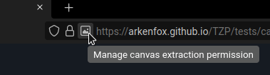
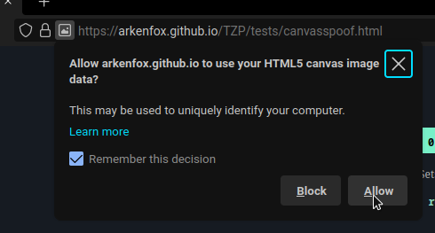

Frequently Asked Questions
This FAQ documents version 6.8 of the settings. Make sure to always upgrade to the latest version of the browser. If your question is not answered here, you can try to get answers in our Matrix room, or on r/LibreWolf and c/LibreWolf.
Alternatively, you could check the parts in the Firefox documentation that could be relevant:
- Protect your privacy.
- Manage preferences and add-ons.
- Fix slowness, crashing, error messages and other problems.
General questions
I have a problem. Where do I open a new issue?
Once you have read the contribution guidelines and you are sure you want to open a new issue you can head over to our issue tracker on Codeberg.
Will you provide an Android version of LibreWolf 2.0?
At the moment nobody is working on it, and it is not something we have considered investing time in. We recommend using Mull as an alternative.
Why don't you accept donations?
We don't want to deal with the administration required to properly handle donations. If we don't need funding, we won't risk becoming dependent on it. And also: no donations means no expectations. This means that people working on LibreWolf are free to move on to other projects whenever they want.
Will you change the default search engine?
We are going to keep DuckDuckGo since we believe it is a competent and privacy respecting search engine.
Users that have ethical problems with DDG can always change their default search engine with one click.
Do you have any contribution guidelines?
Before opening a new issue we require that you read the FAQ in full and that you check out the settings page. We also ask you to look for existing issues that address your problem, before opening redundant ones. Finally, we also appreciate when users try to reproduce their issues in a new profile to make sure their extensions and settings are not the root cause of the issue.
When opening a new issue make sure you follow the template if it exists, and after you did we ask you to contribute to it, by providing the needed details. When these simple rules are not respected, issues might be closed by maintainers.
Suggestions, improvements and contributions to LibreWolf are appreciated in the form of merge requests, or alternatively well documented issues. We suggest interested contributors to join us on Matrix.
In my country I can't download uBO from Mozilla's store. What can I do?
If you can, we recommend downloading from the GitHub releases page. In any case, do NOT download extensions from random websites.
More details are available at this link.
Security and Privacy:
How often do you update LibreWolf 2.0?
LibreWolf is always based on the latest version of Firefox. Updates usually come within three days from each upstream stable release, at times even the same day. Unless problems arise, we always try to release often and in a timely manner.
It should however be noted that LibreWolf does not have auto-update capabilities, and therefore it relies on package managers or users to apply them.
Can I use LibreWolf with Tor?
Please don't.
The Tor network is designed to give you complete anonymity, but it can be compromised if you use it with any browser other than the Tor Browser. If you want anonymity, download the Tor Browser.
The Tor Browser is specifically designed to reduce fingerprintability and to work on Tor. Using LibreWolf or any other browser would make you stand out and it is not recommended.
Why do you disable Google Safe Browsing?
We disable Safe Browsing as we consider it a censorship concern, and we would rather not let Google control another aspect of the internet. With that being said, Safe Browsing is still a good security tool and Mozilla's implementation is privacy respecting: for this reason those who are interested in the extra security, and in particular less technical users, can and should safely enable it.
Despite the above concerns, we are open to re-evaluating and recommending Safe Browsing with the right defaults. Unfortunately, to be fully functional, Safe Browsing requires to include a developer key at build time: this means that a Google account becomes a hard requirement for anyone building from source. This also means that LibreWolf cannot provide a fully functional Safe Browsing experience at the moment.
More details are available at this link.
Do you recommend using any extensions?
Yes, in fact we include uBlockOrigin in the browser. We also have a few suggestions that you can look at.
However, as a general rule, you shouldn't install too many add-ons. Each add-on is a new potential source of security vulnerabilities and may make you stand out.
What are some tips on a more hardened setup?
To improve your privacy we suggest enabling letterboxing, in order to prevent your real window size from being fingerprinted. This can be especially useful if you resize your window.
It's also possible to further limit the behavior of cross-origin referers, although it's worth noting that this might cause breakage.
Should I allow canvas access? How do I do it?
Please be mindful when allowing canvas access as it is a very strong fingerprinting vector; however, if you are already logged into a website you shouldn't stress too much about giving it canvas access because they already know who you are.
Canvas can be handled on a per-site basis thanks to RFP. You will be prompted for access next to the URL bar, so look for the icon there.


Why is the built-in password manager disabled?
We believe you should use a password manager that is better for your security and comfort, please consider some of the options in our recommended addons.
Does LibreWolf use HTTPS-Only mode?
Yes, and you won't need any extension for that. HTTP can still be allowed for certain sites.
Does LibreWolf make any outgoing connections?
Yes, but they aren't in any way privacy invading and they were carefully evaluated. Specifically they are needed to fetch and update the blocking lists used by uBO, Tracking Protection and certificate revocation, which we considered more important than disabling all outgoing connections, especially ones that are harmless. LibreWolf also maintains an open WebSocket towards Mozilla's push server to check wether you have received push notifications from websites you have subscribed to.
With that being said, LibreWolf is still committed to removing all privacy invading connections, and to keep all connections to the bare minimum required to maximize and balance privacy and security.
What is Enhanced Tracking Protection?
In LibreWolf we decided to enable Enhanced Tracking Protection, as it plays nicely with uBO and it can block some extra scripts. Additionally, when set to strict it includes dFPI, SmartBlock, enhanced cookie cleaning, stricter referrer policies and URL query stripping. For this reason, we always suggest the default strict mode, and when using it please do not enable FPI, as it interferes with the more recent dFPI.
Finally, there's no point in changing from strict to any other mode, as strict mode doesn't usually cause any kind of breakage, and changing to custom mode to block cookies will come at the expense of disabling partitioning: not worth it, so we decided to hide the UI that allows users to change this setting. You can instead whitelist specific websites from the urlbar. More details are available at this link.
Tracking Protection requires some occasional outgoing connections, in order to fetch its blocking lists: these connections are harmless for privacy, and TP has a flawless track record in this regard. A particular important connection is the one that TP makes on first launch, as without it the feature cannot effectively work. If you want, you can block these outgoing connections by using the following overrides:
defaultPref("browser.safebrowsing.provider.mozilla.updateURL", "");
defaultPref("browser.safebrowsing.provider.mozilla.gethashURL", "");As stated above, and despite what you see in the Settings UI, blocking these connections will cause TP to stop working, as it won't be able to use the lists that allow it to block known tracking, cryptomining and fingerprinting scripts.
Why isn't First Party Isolate enabled by default?
FPI is not enabled by default as we use dFPI, and the two do not work well together. dFPI is a newer implementation and it causes less breakage, plus it is included by default when using Tracking Protection in strict mode.
Please also notice that dFPI makes containers and containers extensions redundant, unless you want to protect your privacy when visiting the same website multiple times, during the same browsing sessions.
Why can't I use always-on private browsing?
We have decided to hide that option as it doesn't provide any benefit over the default cleaning mechanism of LibreWolf. Instead it introduces many regressions, as it doesn't respect cookie exceptions and installed addons, while also being fingerprintable.
Can LibreWolf protect my public IP address?
No. If you care about protecting your IP address, you should use a VPN or even better use the Tor Browser.
How do I disable IPv6?
Instead of disabling IPv6 in the browser, we recommend enabling the IPv6 privacy extension at the OS level. macOS and Windows users are already covered, but some Linux distros do not enable it by default.
Does the bookmarks toolbar impact RFP's window size protection?
If you set its visibility to "Only show on New Tab", the bookmarks toolbar can alter inner window size slightly deviating from the rounded value: while you should not stress over this, we generally recommend to set the visibility to "Always Show" or "Never Show".
The current default is "Always show" in an effort to avoid messing up RFP's window size without being user hostile.
Should I disable accessibility services?
While we don't disable accessibility services by default, you might want to consider disabling them if you don't need them. You can read more about it at this link
Usability
What are the most common downsides of RFP (Resist Fingerprinting)?
It is possible that users will experience breakage because of RFP: usually this is caused by canvas access, which can be relaxed on a per-site basis.
Other common problems brought by RFP include:
- spoofed timezone.
- forced light theme.
- smaller and fixed window size on startup.
- suppressed keyboard modifier events using alt-keys.
There's no real workaround for these annoyances as they are intended to protect your privacy. Tweaking them using extensions or preferences significantly impacts the effectiveness of RFP, both for the users themselves, and the rest of the userbase: modifications create a subset of users who stand out and reduce the number of RFP users who look the same, making it worse for everyone.
For this very reason we suggest against modifying any metric involved in RFP, as even a single change could make it useless. We also suggest users to get used to RFP and stick with it as much as possible: it is a very powerful tool that gets improvements as the result of the Tor Uplift Project, and it will surely benefit your privacy in a major way.
If you don't like the downsides of RFP, or you are not concerned about fingerprinting, you can disable RFP in the LibreWolf settings, or in your overrides.
In that case consider using an extension like CanvasBlocker to retain at least a minimum amount of fingerprinting protection.
Why am I seeing striped images?
If you see striped images in your browser, that's most likely caused by the fact that the website needs canvas access to display them properly. Check out how to allow it.
What should I do if video conferencing is not working?
Videoconferencing platforms may require to enable WebGL and to allow autoplay.
Why is Session Restore not working?
Session restore will not work unless you preserve your browsing history. However, LibreWolf deletes history on shutdown by default. If you want to use session restore, set your browser to not delete history, via settings or overrides.
How do I stay logged into specific websites?
Add an exception at Settings > Privacy & Security > Cookies and Site Data >
Manage Exceptions. Make sure you add a website to the exceptions before you
login, both http and https versions of the domain. If you want to stay
logged into www.example.com enter example.com and click on "Allow": you
should then see the two versions listed, and you can go ahead and save the
changes.
Why is LibreWolf forcing light theme?
This is one of the privacy measure that come with RFP (Resist Fingerprinting). Our stance is that if you care about fingerprinting protection you should never alter RFP behavior in any way.
If you still want the dark theme for web content, check whether your favourite websites allow to set it manually.
Why does LibreWolf not remember my window size?
As mentioned in this FAQ this is part of RFP: the idea is to protect your actual window size by returning a rounded value.
How do I enable search suggestions?
If you use a privacy respecting search engine go to Settings > Search > Search Suggestions, and enable search suggestions.
How do I add a search engine?
LibreWolf provides a selection of privacy respecting search engines, but you can add more by following this guide.
Please note that some search engines, most notably Google, do not comply with the OpenSearch standard so you will not be able to add them the usual way. In that case, you can also check The Mycroft Project for an alternative source of search engine plugins.
How do I allow autoplay of media?
Autoplay can be controlled on a per-site basis from your urlbar.
How do I fully prevent autoplay?
The default autoplay strategy used in LibreWolf is called sticky and it's similar to the one found in other modern browsers. To avoid breakage it is not as strict as a full fledged user-triggered autoplay and it allows videos and thumbnails to play in some cases.
If you prefer a stricter autoplay policy you should have a look at this override recipe.
How do I enable push notifications?
Push notifications require to set a per-site exception, just like with cookies.
How do I enable DRM?
We disable DRM by default, as we consider it a limitation to user freedom. Take a moment to read about it before you go ahead and enable it.
DRM support can be enabled from Settings > General > Digital Right Management (DRM) Content. Additionally, a pop-up and an icon in your URL bar will show up when a website is trying to use DRM.
Can I safely change language in the browser?
Yes, you can normally apply language packs from the settings. To protect your
privacy, LibreWolf will make you appear to websites as a en-US user.
Can I also change the language of the web content?
Yes, but you will need overrides since we enforce en-US.
This comment
offers some guidance, using German as an example.
Can I set a default download directory?
As a security measure, LibreWolf asks for user interaction after each download. You can change that in Settings > General > Files and Applications > Downloads > Save files to..
Can I use Firefox Sync with LibreWolf? Is it safe to do so?
Yes, you can enable it in your the LibreWolf specific UI or in your overrides. There aren't significant downsides as Firefox Sync encrypts your data locally before transmitting it to the server. Additionally, you can self-host the old version of the server if you really don't want to use Mozilla's, and there's work being done to have the new version equally easy to self-host. Find out more about the technical details of Sync's implementation here and here.
When using Sync across multiple installations you might want to disable settings synchronization to avoid unintentional changes.
I'm getting the "SSL_ERROR_UNSAFE_NEGOTIATION" error. What can I do?
The server you are trying to reach does not support
RFC 5746 and is potentially
vulnerable to MiTM attacks. You can bypass this warning by flipping
security.ssl.require_safe_negotiation to false in about:config, but we do not
recommend adding this to your overrides as it is a bad default.
I'm getting "SEC_ERROR_OCSP_SERVER_ERROR". What can I do?
We enable OCSP in hard-fail mode, meaning that if the revocation status of a certificate cannot be verified because the CA cannot be reached, then it will be treated as broken. While this improves security, it could also decreases usability as OCSP servers tend to be down often.
If you're experiencing this error:
- OCSP servers tend to get blocked by host files and blocking lists by mistake, so check your firewall and blocking lists first.
- OCSP is not compatible with most proxy and vpn extensions, so that's also something to consider.
If instead a server is actually down, you can consider disabling hard-fail mode in the LibreWolf settings, or using overrides.
I'm getting "MOZILLA_PKIX_ERROR_KEY_PINNING_FAILURE". What can I do?
We enable strict Public Key Pinning, so user level MiTM is not supported by default: this is problematic when an antivirus is trying to monitor your network traffic by using its own certificates.
If you use this kind of antivirus software and you want to disable this, you
need to change security.cert_pinning.enforcement_level to 1 in about:config.
How do I enable DNS-over-HTTPS?
You can use the dedicated UI in the settings of the browser, in the Privacy & Security category specifically. Just like in Firefox, you can choose between four different modes and select a provider of your choice.
By default DoH is not enabled in LibreWolf.
Linux specific questions:
Can't open links with Librewolf when using Wayland
The solution is also described in this issue.
When setting LibreWolf as a handler to open links with, in some circumstances, environment variables parsed during "regular" launch are not parsed / applied when opening LibreWolf as a handler (XDG MIME handling) when using Wayland. Librewolf then either gets launched without opening the link or by giving an error ('Librewolf is already running').
This can be fixed by placing a modified .desktop file in
~/.local/share/applications/.
It's easiest to just copy the existing .desktop file (for native packages
/usr/share/applications/librewolf.desktop, for Flatpak
~/.local/share/flatpak/exports/share/applications/io.gitlab.librewolf-community.desktop)
to ~/.local/share/applications/ and edit the Exec lines:
Flatpak
# io.gitlab.librewolf-community.desktop
Exec=/usr/bin/flatpak run --env=GDK_BACKEND=wayland --branch=stable --arch=x86_64 --command=librewolf --file-forwarding io.gitlab.librewolf-community @@u %u @@
Exec=/usr/bin/flatpak run --env=GDK_BACKEND=wayland --branch=stable --arch=x86_64 --command=librewolf --file-forwarding io.gitlab.librewolf-community @@u %u @@
Exec=/usr/bin/flatpak run --env=GDK_BACKEND=wayland --branch=stable --arch=x86_64 --command=librewolf --file-forwarding io.gitlab.librewolf-community --private-window @@u %u @@
Exec=/usr/bin/flatpak run --env=GDK_BACKEND=wayland --branch=stable --arch=x86_64 --command=librewolf --file-forwarding io.gitlab.librewolf-community --ProfileManager @@u %u @@
For Flatpak, this might also be possible by using
flatpak override --user --env=GDK_BACKEND=wayland io.gitlab.librewolf-community,
but this is not yet tested.
Native Linux Package
# librewolf.desktop
Exec=env GDK_BACKEND=wayland MOZ_ENABLE_WAYLAND=1 /usr/lib/librewolf/librewolf %u
Exec=env GDK_BACKEND=wayland MOZ_ENABLE_WAYLAND=1 /usr/lib/librewolf/librewolf --new-window %u
Exec=env GDK_BACKEND=wayland MOZ_ENABLE_WAYLAND=1 /usr/lib/librewolf/librewolf --private-window %u
How do I get native messaging to work?
To get native messaging to work, for example for the Plasma Integration, create two symlinks by running these commands:
ln -s ~/.mozilla/native-messaging-hosts ~/.librewolf/native-messaging-hosts
sudo ln -s /usr/lib/mozilla/native-messaging-hosts /usr/lib/librewolf/native-messaging-hosts
How can I get Tridactyl's native messaging to work when I install Librewolf with Flatpak?
To get Tridactyl's native feature to work Tridactyl's install script needs to look into Librewolf's app data directory and be allowed to read the user's RC file.
Execute the following:
curl \
https://gitlab.com/librewolf-community/browser/common/-/raw/master/helpers/tridactyl-install.sh \
> /tmp/tridactyl-install.sh
sed -i \
's/\.librewolf/\.var\/app\/io\.gitlab\.librewolf-community\/\.librewolf/g' \
/tmp/tridactyl-install.sh
chmod +x /tmp/tridactyl-install.sh
/tmp/tridactyl-install.sh
# If installed onto the system, rather than the user, then remove `--user`
flatpak --user override io.gitlab.librewolf-community --filesystem="${XDG_CONFIG_HOME:-~/.config}"/tridactyl
flatpak --user override io.gitlab.librewolf-community --filesystem="${XDG_DATA_HOME:-~/.local/share}"/tridactylI get the APT error "Certificate verification failed"
If you get an error message that looks something like this
Err:5 https://deb.librewolf.net uma Release
Certificate verification failed: The certificate is NOT trusted. The certificate chain uses expired certificate. Could not handshake: Error in the certificate verification. [IP: 116.203.248.82 443]
Reading package lists... Done
E: The repository 'http://deb.librewolf.net uma Release' does not have a Release file.
N: Updating from such a repository can't be done securely, and is therefore disabled by default.
N: See apt-secure(8) manpage for repository creation and user configuration details.
You can try to fix it by running
sudo apt install ca-certificates
I installed LibreWolf and KeePassXC using Flatpak and it does not work
As you may have noticed when installing both LibreWolf and KeePassXC via Flatpak, they do not work together out of the box. We suggest reading this guide to fix this issue!
What are the Linux options for ARM64, or aarch64 architectures?
Support depends highly on the distribution you are using. The Flatpak version of LibreWolf is available for ARM, and generic binary ARM tarballs are also available. The deb and rpm packages are not available right now for anything else than x86_64, but we plan to add support in the future.
macOS specific questions:
How do I install LibreWolf on macOS?
You can either build from source, install using a disk image from the releases or install using Homebrew.
How do I build LibreWolf on macOS?
You can build LibreWolf from source by cross-compiling it on Linux. For more details head over to our source repo or to the bsys6 repo and read the documentation.
How do I update LibreWolf on macOS?
To update the browser on macOS you need to grab the latest .app and drag it into
your Applications directory, or if you installed using Homebrew you can do it
as you would for every other cask.
Is LibreWolf available via Homebrew?
LibreWolf is available as a cask, so you can install entering
brew install --cask librewolf.
Does LibreWolf work on Apple Silicon machines?
Yes, we provide native builds for both Intel and ARM based machines. If you own
an Apple Silicon powered MacBook the relative builds are referred to as
aarch64, they are cross-compiled and we did not test them before release.
Please consider that the build time on Apple Silicon is relatively low, so
building from source is probably worth it in any case.
Why is LibreWolf marked as broken?
It is possible that Apple Silicon users see their recently downloaded LibreWolf flagged as broken or unsafe by the OS.
This happens because we do not notarize the macOS version of the browser: we don't have a paid Apple Developer license and we don't want to support this signing mechanism that is put behind a paywall without providing significant gains.
Here you can find a proposed fix, and the relative discussion. Alternatively, you can remove the quarantine attribute directly from brew:
brew install librewolf --no-quarantine
How do I get native messaging to work?
You need to add the following symbolic link:
ln -s ~/Library/Application\ Support/Mozilla/NativeMessagingHosts ~/Library/Application\ Support/LibreWolf/NativeMessagingHosts
This is necessary to get KeePassXC-Browser extension to work.
Windows specific questions
I have Kasperky antivirus. Why does my New Tab page not work?
This is a known issue with Kasperky: windows#313, windows#303. Please exclude LibreWolf from Kaspersky's monitoring, and it should go back to normal.
How do I set up Bitwarden's biometric authentication?
This is an ongoing issue where we can only help you with a workarround:
Open the Registry Editor and go to
Computer\HKEY_CURRENT_USER\SOFTWARE\Mozilla\NativeMessagingHosts\ and/or
HKEY_LOCAL_MACHINE\SOFTWARE\Mozilla\NativeMessagingHosts. Create a new key
called com.8bit.bitwarden in the left-side panel of RegEdit (or your registry
editor of choice, fellow home users). Set the Default REG_SZ to contain the
path to Bitwarden Firefox's Native Messaging Manifest:
...\browsers\firefox.json. The path may look something like this, your mileage
will wary:
C:\Users\milk\scoop\apps\bitwarden\current\bitwarden-appdata\browsers\firefox.json.
Once you've done that, you should be able to setup the Native Messaging bridge between LibreWolf and Bitwarden for biometric authentication.